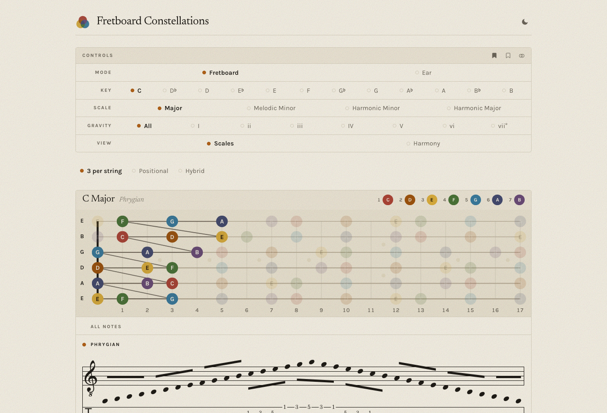
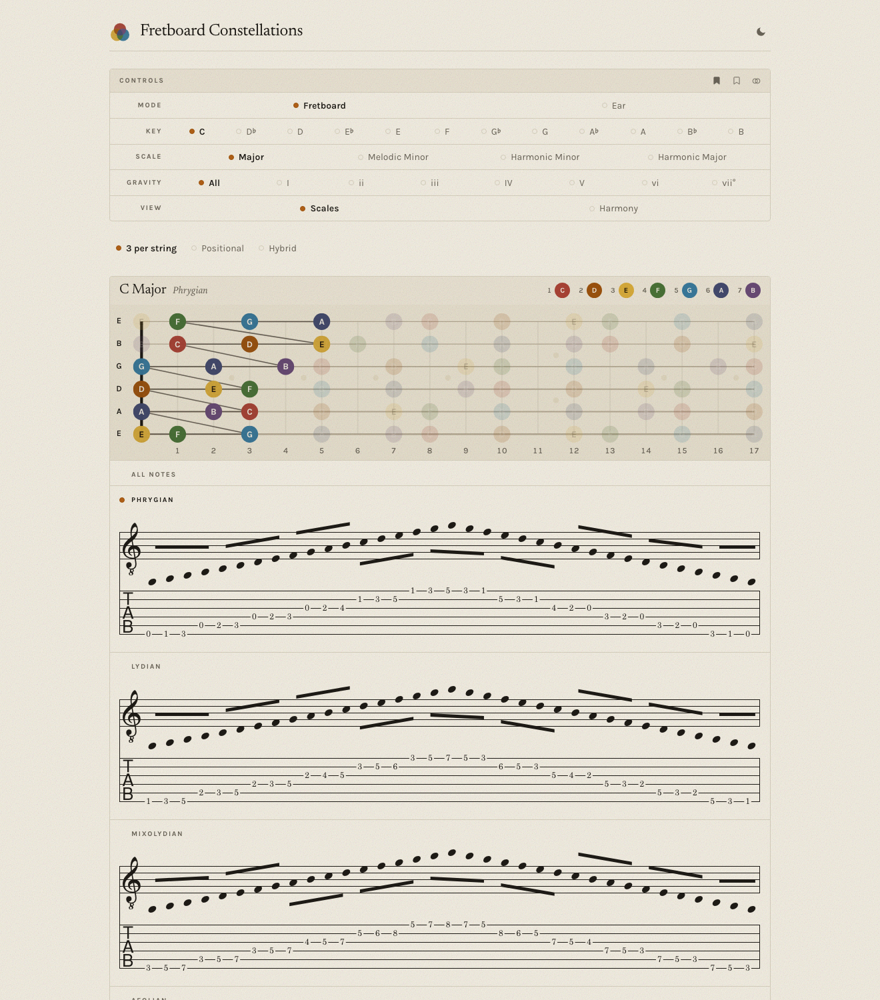

Case study · 2025 – present
Fretboard Constellations
An interactive theory instrument for guitar — built to teach the way an expert actually teaches: by seeing, hearing, and playing, not by reading.
In short
- The problem
- Theory tools explain; a live guitar lesson needs one you can do — see, hear, and play a pattern, not read about it.
- My role
- Sole product designer and developer — product thinking, UX, the visual system, and the TypeScript/React build.
- The defining decision
- Design for the expert teaching live on a shared screen, not the lone learner — which cascaded into Lesson vs. Studio modes and disclosure by relevance, not level.
- The outcome
- A deployed, in-use instrument on a theory-as-data engine (new scales, chords, and tunings are data files, not code) — scales, chords, and a live Harmony view, all playable across the neck with notation and TAB.

Overview
A living textbook for the guitar
Fretboard Constellations renders music theory — scales, chords, harmony — as colour-coded shapes across the neck that you can see, hear, and play. I own it end to end: the product thinking, the UX, the visual system, and the TypeScript/React build. It grew out of a decade of teaching, rebuilt as software.
Draft note — add the outcome you're proudest of: what it changed in your own lessons, how students or peers responded, what it let you do that a whiteboard couldn't.
The thesis
Theory exists to free expression, not to be studied
Most theory tools explain. This one lets you do. The idea underneath: technique and theory exist to free expression — one transferable pattern, applied across the instrument. The less you have to think, the more you can play. So the app never lectures; it shows the pattern and hands you back the instrument.
The defining decision
Designed for the teaching room, not the lone learner
The hardest and most clarifying decision came first: who is the primary user? Not the self-directed learner most theory apps assume — but an expert teaching live, on a shared screen. That single choice cascaded through everything. An expert drives, so nothing is skill-gated — everything stays reachable. A student is watching, so the screen has to stay calm and legible. And disclosure happens by relevance, not by level.
It's why the app splits into a Lesson Mode — calm, the neck and score at maximum size, minimal chrome, the real primary state — and a Studio Mode with every control visible, for preparing alone. Designing for the room where teaching happens decluttered more than any amount of control-tidying could.
The core architecture
Theory as data, not code
Under the UX is a product decision: Fretboard Constellations is an engine that renders theory data. Scales, chords, voicings, tunings — even whole instruments — live as plain data files; the engine reads them and draws and plays them. Adding a scale, a chord, or a new tuning means adding a data file, not touching the engine. Small surface area, limitless content — and the reason the app can keep growing without collapsing under its own features.
The load-bearing idea
The app is a search tool, not a display
Here's a chord → here are the keys it could live in → watch the space narrow as you add the melody note, the next chord, the mode. That's how theory actually gets used in a lesson — as reverse-engineering — and the app makes the search visible: a thin context band shows the current key hypotheses, the candidates still in play, and what just narrowed them. The student watches the engine run. It's the thing that makes it this app and not a chord chart.
Draft note — a line on how the “search” interaction landed with students: did watching the space narrow change how they understood a progression?
The signature view
Externalizing the map an expert carries
An experienced player holds a mental image of the neck — where the notes live, how shapes connect. Fretboard Constellations externalizes that image. Each scale degree gets a colour; every shape appears in all its positions across the neck as hoverable constellations, with standard notation and TAB, and all of it is playable — click a chord to strum it, a scale box to run it. When the harmonic context is ambiguous, overlapping constellations are colour-coded so the candidate keys read at a glance.

The look — “Paper & Night”
An art-book, not a dashboard
The visual direction is literary, not utilitarian: a serif (Newsreader) for display, a clean grotesque (Karla) for everything operational, and a warm paper ground that stays calm and legible projected on a wall in a lesson. A Night mode carries the same system into the dark. It's the same analog-serif sensibility this portfolio runs on — the two arrived there independently.
Where it is · what's next
Deployed, and still growing
Live and in active use. Today it renders scales as their seven playable position boxes, chords as voicing shapes with independent structure and inversion, and a Harmony view of a key's diatonic chords with Roman numerals — every shape playable, across the neck, with TAB. Next: the context strip as a persistent band, and a self-guided course mode — in the spirit of Ableton's Learning Synths — that reuses the same engine.
Reflection
What I'd carry forward
Draft note — 2–4 sentences in your voice: the hardest trade-off, what building it taught you about designing for experts vs. learners, what you'd do differently. This section reads closest.